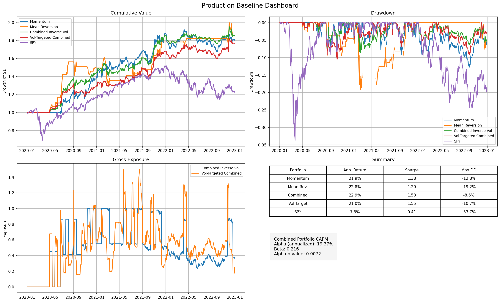
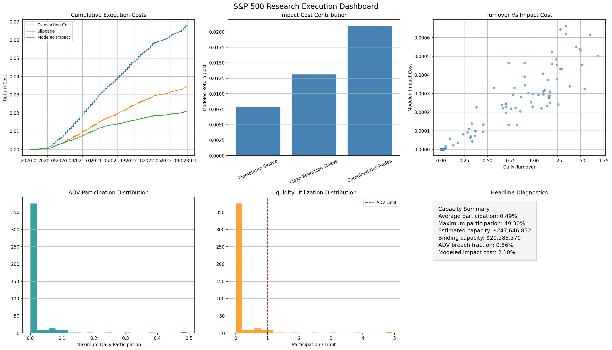
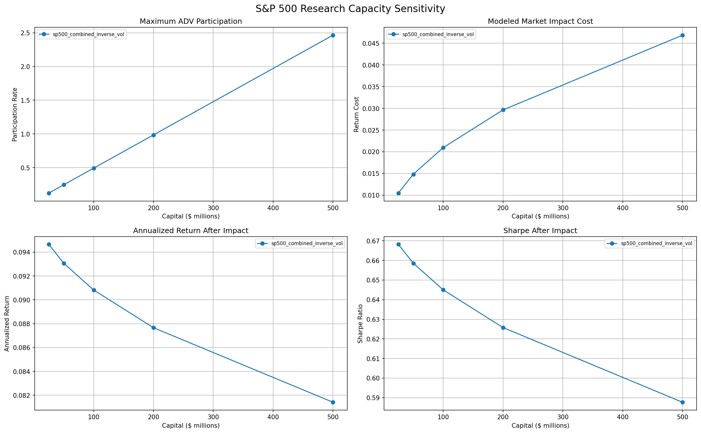
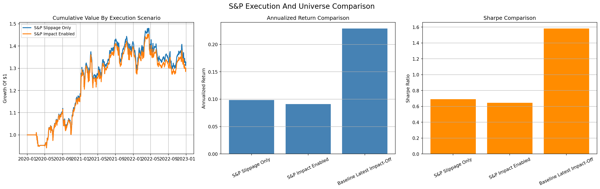
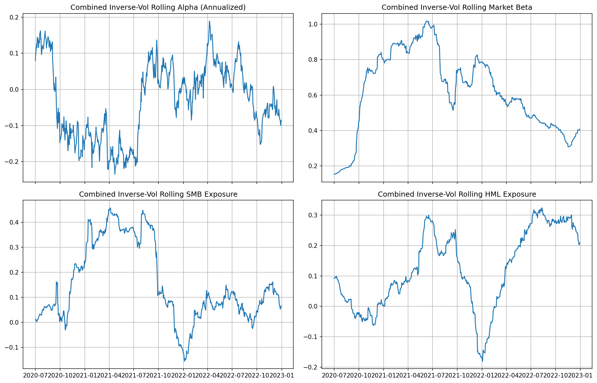
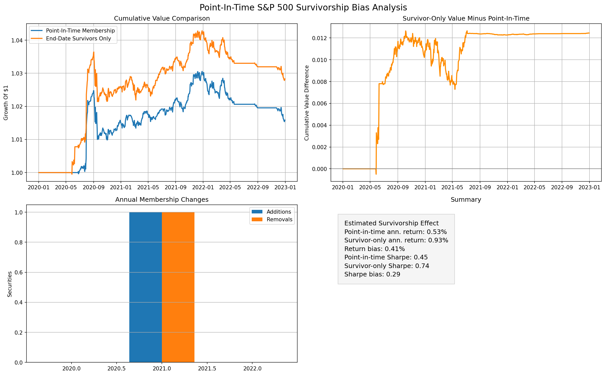

Strategy Development
Momentum and pullback sleeves are intentionally simple and auditable, then converted into portfolio weights and rebalanced strategies.
Strategy, portfolio, and execution research
Python research platform for constructing, backtesting, and evaluating systematic equity strategies with transaction costs, slippage, execution modeling, risk management, and performance evaluation.
Project Story
Momentum and pullback sleeves are intentionally simple and auditable, then converted into portfolio weights and rebalanced strategies.
Transaction costs, adaptive slippage, market impact, turnover, liquidity filters, and capacity estimates make the backtest harder to fool.
Walk-forward tests compare selected parameters against fixed production defaults to measure stability and out-of-sample decay.
Current S&P 500 and point-in-time membership frameworks support larger-universe research and survivorship-bias diagnostics.
Architecture
Strategies
The system combines a trailing momentum sleeve with a pullback-based mean-reversion sleeve. The production path keeps fixed parameters and turns sleeves into a portfolio using inverse-volatility weights, risk controls, and execution assumptions.
Execution And Capacity
The execution layer preserves fixed slippage while optionally adding turnover-adjusted and market-impact-aware cost models. Capacity estimates use ADV participation, realized volatility, trade size, and liquidity utilization.
Factor Analysis
Factor analysis is used as portfolio attribution after strategy backtests are built. The analytics layer supports CAPM, Fama-French 3-factor, optional 5-factor frameworks, factor t-stats and p-values, and rolling exposure plots using statsmodels OLS.
Key Findings
Production 50-stock baseline: 22.9% annualized return, 13.6% volatility, 1.58 Sharpe, and low beta.
S&P 500 research with market impact enabled: 9.08% annualized return, 0.645 Sharpe, and about $248M estimated capacity.
Fixed production parameters outperformed noisy rolling selection on average OOS Sharpe: 1.04 versus 0.85.
Market impact compressed S&P 500 research performance, reducing annualized return by roughly 0.77 percentage points.
| Mode | Impact | Return | Sharpe | Max DD | FF3 Alpha | Capacity |
|---|---|---|---|---|---|---|
| Production Baseline | OFF | 22.89% | 1.5806 | -8.65% | 19.37% | $1.83B |
| S&P 500 Research | ON | 9.08% | 0.6450 | -12.46% | 5.60% | $247.6M |
| Walk-Forward Fixed | OFF | 18.98% | 1.0426 | -6.19% | 13.61% | $2.58B |
Dashboards






Survivorship Framework
The historical-universe framework supports dated constituent membership, entry and exit dates, member turnover diagnostics, and survivor-only versus point-in-time comparisons.
Research Limitations
Public data is suitable for portfolio demonstration and research prototyping, not production trading.
True point-in-time benchmarking requires licensed historical membership and delisted-security data.
Market impact is stylized and transparent, but not broker-calibrated.
The current validation windows are intentionally lightweight for local reproducibility.
Technical Stack